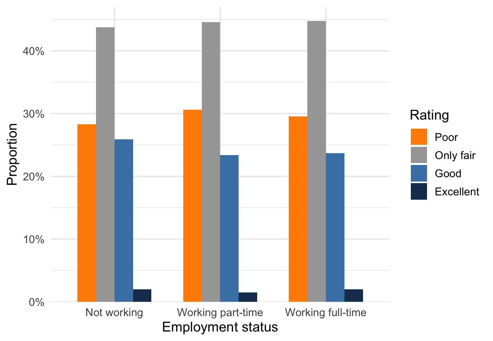
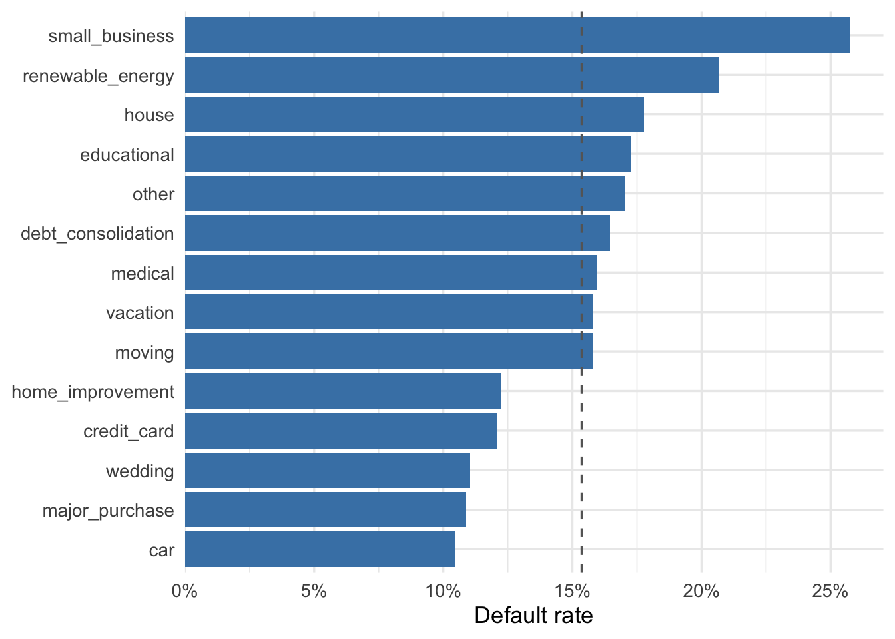

| Purpose | Charged Off | Fully Paid | Total |
|---|---|---|---|
| debt_consolidation | 8,131 | 41,278 | 49,409 |
| home_improvement | 717 | 5,139 | 5,856 |
| small_business | 822 | 2,369 | 3,191 |
| Total | 9,670 | 48,786 | 58,456 |
6 Two Categorical Variables
The last chapter ended with a question the frequency table could not answer: which loan purposes default most often? This is a question about the distribution of two categorical variables at once: the loan’s original purpose and its ultimate outcome.
6.1 Cross-tabulations and contingency tables
We’ll start with counts, because everything else in this chapter is a count divided by some total. A cross-tabulation (or contingency table, or crosstab for short) counts how many observations fall into each combination of categories: one row per category of the first variable, one column per category of the second, and a count in every cell. Fourteen purposes make for a bulky table. We want every calculation in this section small enough to check by hand, so we’ll narrow to the 58,456 loans with three of the more interesting purposes: debt consolidation, home improvement, and small business. Table 6.1 shows their crosstab with loan status.
Look at the margins first, the row and column labeled Total. The Total column on the right is a frequency table of purpose — the same one-variable summary we built last chapter, computed on this subset — and the bottom row is the frequency table of loan status: 48,786 fully paid, 9,670 charged off. A crosstab contains both one-variable summaries in its margins, plus something neither had alone: the interior cells, which record how the two variables tend to move together.
6.2 Joint, marginal, and conditional proportions
Counts depend on the overall sample size, so it’s often convenient to convert them to proportions. With two variables there are three different totals we could divide each count by, and each choice answers a different question.
6.2.1 Joint proportions
Divide every cell by the grand total and you get joint proportions: the share of all loans that have a particular combination of purpose and outcome. Table 6.2 shows the result of dividing every count in Table 6.1 by 58,456.
| Purpose | Charged Off | Fully Paid | Total |
|---|---|---|---|
| debt_consolidation | 13.9% | 70.6% | 84.5% |
| home_improvement | 1.2% | 8.8% | 10.0% |
| small_business | 1.4% | 4.1% | 5.5% |
| Total | 16.5% | 83.5% | 100.0% |
In words: a joint proportion answers “what share of all loans are debt-consolidation loans that charged off?” The crosstab counted 8,131 such loans out of 58,456 total, so the joint proportion is
\[ \frac{8,131}{58,456} = 0.139, \]
which the table reports as 13.9%. A proportion and its percentage are the same number in different clothes — 0.139 is 13.9% — and we’ll write our calculations as proportions while the tables stay in percent.
A joint proportion answers an “and” combination: How often do we see a small-business loan and a default? How often do we see a home-improvement loan and a non-default? The joint distribution of two categorical variables is the collection of all joint proportions, and it is the two-variable analogue of a one-variable frequency table.
6.2.2 Marginal proportions
The margins of this table — the Total column and the bottom row — are called marginal proportions, and they are nothing new. The marginal distribution of purpose is just the one-variable frequency table of purposes, expressed in proportions, and the marginal distribution of loan status is the overall default rate among these loans, 16.5%, and its complement.
Remember that we get the marginal proportion for any category by adding up the joint proportions across the other variable. For example, the share of all loans that are debt-consolidation loans is the sum of the two joint proportions in that row:
\[ 0.706 + 0.139 = 0.845. \]
In words: the fully-paid debt-consolidation loans and the charged-off debt-consolidation loans together account for 84.5% of all the loans in the table.
6.2.3 Conditional proportions
Perhaps the most practical question we could answer with the crosstab is the one we started with: which purposes default most often? That is a question about default rates within each purpose: among small-business loans, what share charged off? Among home-improvement loans? To answer it we divide each cell by its row total rather than the grand total, which gives the conditional proportions of loan status given purpose — the distribution of the outcome once we restrict attention to one row at a time.
A conditional proportion answers an “if” or an “assuming that” question. If the loan is for a small business, then the default rate is 25.8%. To answer this question, the only relevant information is about small-business loans, which is why we ignore the other rows and divide by the small-business loan total rather than the grand total. From the counts in Table 6.1, 822 of the 3,191 small-business loans charged off:
\[ \frac{822}{3,191} = 0.258. \]
There is a second route to the same number. Divide the numerator and denominator each by the grand total and the counts become proportions — the joint proportion of “small business and charged off” on top, the marginal proportion of small-business loans on the bottom:
\[ \frac{0.0141}{0.0546} = 0.258. \]
In words: a conditional proportion is the joint proportion divided by the marginal proportion of the conditioning — the “if” — variable. Dividing count by count or proportion by proportion gives the same answer, because the grand total cancels. Table 6.3 collects the conditional default rates for all three purposes.
| Purpose | Loans | Default rate |
|---|---|---|
| small_business | 3,191 | 25.8% |
| debt_consolidation | 49,409 | 16.5% |
| home_improvement | 5,856 | 12.2% |
6.3 Conditional proportions, marginal proportions, and (in)dependence
A natural question is whether default rates differ by loan purpose.
Let’s think through an example. Across all the loans in our three-purpose table, the default rate is 16.5%. That’s a marginal proportion. We just computed the default rate for small-business loans, which was 25.8%. By the same calculation, the default rate for home-improvement loans is 12.2%. Those are both conditional proportions, and each sits well away from the marginal rate of 16.5% — one above, one below. In these historical data, loan purpose and default are dependent: the conditional default rates differ by purpose. If purpose and default were independent, we would expect the conditional default rate for every purpose to be the same as that overall rate. Instead, we see that the conditional distributions differ quite a bit by purpose.
The Federal Reserve household survey provides a nice example of two variables that are closer to independent. The economic-conditions rating we met last chapter is one side of the pair. The other is employment status: the survey records whether each respondent is working full-time, working part-time, or not working. Whether you have a job is about as concrete as economic news gets, so you might expect it to color how people rate the national economy. Table 6.4 shows the conditional distributions — one row per employment group.
| Employment status | Poor | Only fair | Good | Excellent | n |
|---|---|---|---|---|---|
| Not working | 28.3% | 43.8% | 25.9% | 2.0% | 4,961 |
| Working part-time | 30.6% | 44.6% | 23.4% | 1.5% | 1,845 |
| Working full-time | 29.5% | 44.8% | 23.7% | 2.0% | 6,128 |
Read down any column and the numbers barely move; read across any row and the same picture repeats. Whether a respondent works full-time, part-time, or not at all, about three in ten rate conditions poor, a bit under half say only fair, and roughly a quarter say good or better. Learning someone’s employment status tells you almost nothing about how they rate the national economy. When knowing the value of one variable does not change the distribution of the other, we say the two variables are independent. Figure 6.1 makes the sameness visible: the three clusters of bars are nearly interchangeable.

Two caveats. First, conditional distributions in observed data are rarely exactly identical. In the table, respondents working part-time are a touch more likely to rate conditions “poor” (30.6% against 28.3% for those not working), and no gap in the table is much larger than that. Judging whether small gaps like these reflect a real pattern or just noise requires the inference tools we haven’t built yet. Second, “independent” here is an empirical description of one dataset. The formal definition of independence belongs to probability theory, and when we get there you’ll recognize it immediately: it is exactly the identical-conditional-distributions property in this table, restated in the language of random variables.
6.4 Visualizing two categorical variables
For a binary outcome, one conditional rate per group gives us the whole comparison because the other rate is its complement. When both variables have more than two categories, we need multiple bars for each group. Figure 6.1 shows that arrangement: each employment-group cluster is one conditional distribution, so its four bars sum to 100%.
Figure 6.2 returns to all 92,902 loans and all loan purposes from Chapter 5. It shows the conditional default rate for each purpose, sorted from highest to lowest.

Once again we have ordered the purposes by a meaningful value (the corresponding default rate) rather than alphabetically. The dashed line marks the overall default rate across all 92,902 loans, 15.4%.